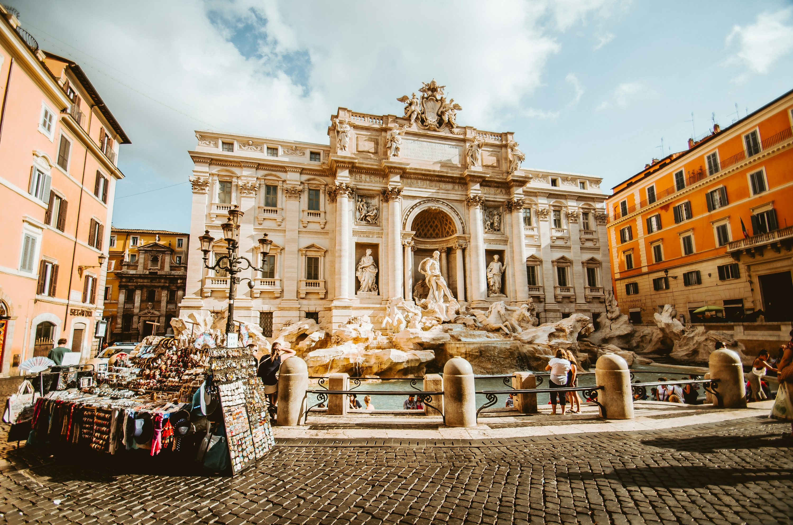
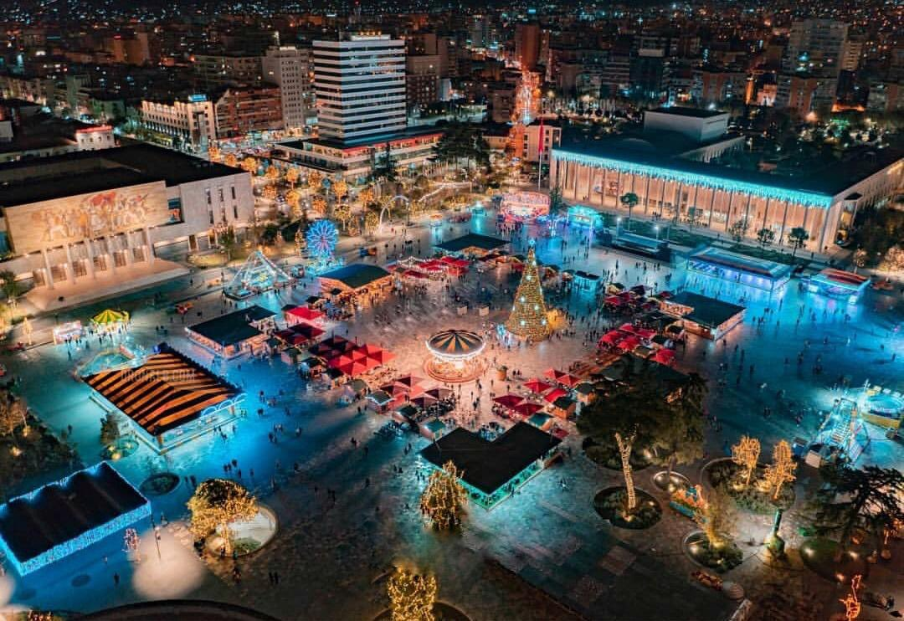

Roma eshte kryeqyteti i Italisë dhe i qarkut me të njëjtin emër. Me një popullsi prej 2,8 milionë banorësh, Roma është qyteti më i madh i Italisë. Qyteti i Romës është një nga qytetet më të vjetra në botë dhe është një nga qytetet më të rëndësishme në historinë e njerëzimit. Roma është një nga qytetet më të rëndësishme të kulturës dhe historisë në botë dhe është një nga qytetet më të vizituara në botë. Roma është një nga qytetet më të rëndësishme të kulturës dhe historisë në botë dhe është një nga qytetet më të vizituara në botë.
Roma është një nga qytetet më të rëndësishme të kulturës dhe historisë në botë dhe është një nga qytetet më të vizituara në botë. Roma është një nga qytetet më të rëndësishme të kulturës dhe historisë në botë dhe është një nga qytetet më të vizituara në botë. Roma është një nga qytetet më të rëndësishme të kulturës dhe historisë në botë dhe është një nga qytetet më të vizituara në botë. Roma është një nga qytetet më të rëndësishme të kulturës dhe historisë në botë dhe është një nga qytetet më të vizituara në botë.
Roma eshte kryeqyteti i Italisë dhe i qarkut me të njëjtin emër. Me një popullsi prej 2,8 milionë banorësh, Roma është qyteti më i madh i Italisë. Qyteti i Romës është një nga qytetet më të vjetra në botë dhe është një nga qytetet më të rëndësishme në historinë e njerëzimit. Roma është një nga qytetet më të rëndësishme të kulturës dhe historisë në botë dhe është një nga qytetet më të vizituara në botë. Roma është një nga qytetet më të rëndësishme të kulturës dhe historisë në botë dhe është një nga qytetet më të vizituara në botë.
Roma është një nga qytetet më të rëndësishme të kulturës dhe historisë në botë dhe është një nga qytetet më të vizituara në botë. Roma është një nga qytetet më të rëndësishme të kulturës dhe historisë në botë dhe është një nga qytetet më të vizituara në botë. Roma është një nga qytetet më të rëndësishme të kulturës dhe historisë në botë dhe është një nga qytetet më të vizituara në botë. Roma është një nga qytetet më të rëndësishme të kulturës dhe historisë në botë dhe është një nga qytetet më të vizituara në botë.
Tirana është kryeqyteti i Shqipërisë dhe i qarkut me të njëjtin emër. Me një popullsi prej 2,8 milionë banorësh, Tirana është qyteti më i madh i Shqipërisë. Qyteti i Tiranës është një nga qytetet më të vjetra në botë dhe është një nga qytetet më të rëndësishme në historinë e njerëzimit. Tirana është një nga qytetet më të rëndësishme të kulturës dhe historisë në botë dhe është një nga qytetet më të vizituara në botë. Tirana është një nga qytetet më të rëndësishme të kulturës dhe historisë në botë dhe është një nga qytetet më të vizituara në botë.
Tirana është një nga qytetet më të rëndësishme të kulturës dhe historisë në botë dhe është një nga qytetet më të vizituara në botë. Tirana është një nga qytetet më të rëndësishme të kulturës dhe historisë në botë dhe është një nga qytetet më të vizituara në botë. Tirana është një nga qytetet më të rëndësishme të kulturës dhe historisë në botë dhe është një nga qytetet më të vizituara në botë. Tirana është një nga qytetet më të rëndësishme të kulturës dhe historisë në botë dhe është një nga qytetet më të vizituara në botë.
Tirana është kryeqyteti i Shqipërisë dhe i qarkut me të njëjtin emër. Me një popullsi prej 2,8 milionë banorësh, Tirana është qyteti më i madh i Shqipërisë. Qyteti i Tiranës është një nga qytetet më të vjetra në botë dhe është një nga qytetet më të rëndësishme në historinë e njerëzimit. Tirana është një nga qytetet më të rëndësishme të kulturës dhe historisë në botë dhe është një nga qytetet më të vizituara në botë. Tirana është një nga qytetet më të rëndësishme të kulturës dhe historisë në botë dhe është një nga qytetet më të vizituara në botë.